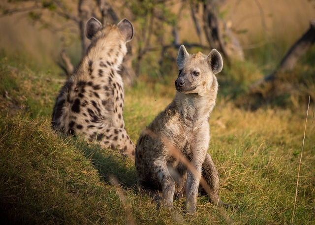
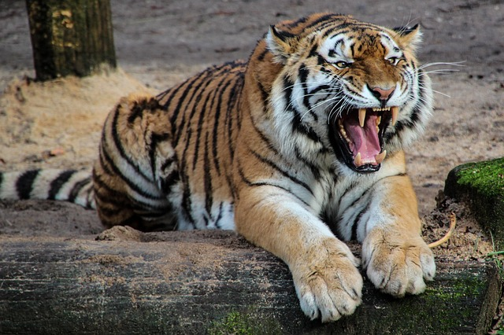
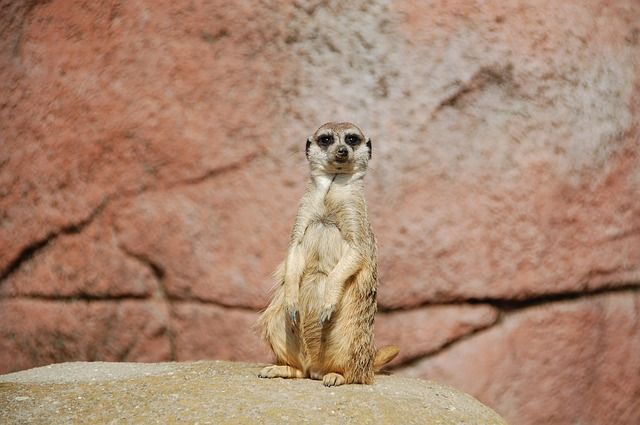
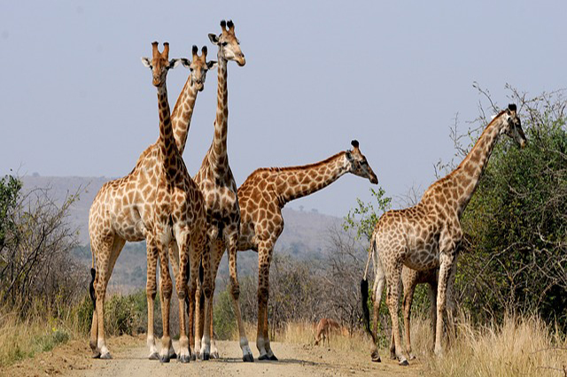
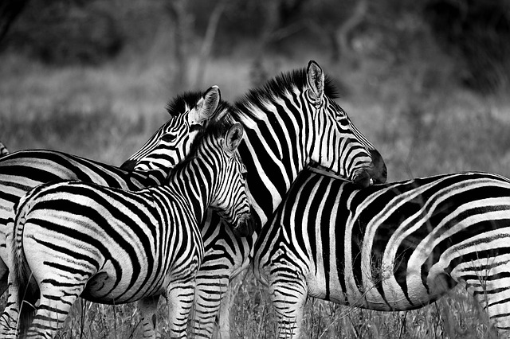
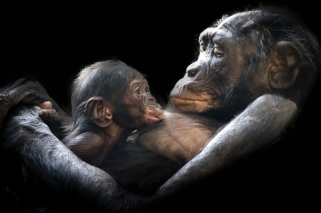

a

Lion
Lions are big cats known as the "King of the Jungle. They are found in Africa and India where they sit at the top of the food chain.A group of lions is called a pride.Lions are the only truly social cats. A pride of lions can range from 3 lions to as many as 30 lions.
Lions are famous for their loud roar which can be heard up to 5 miles away.Even though the female lions do the hunting, the male lion often gets to eat first.
Lions will live about 15 years in the wild.
Lions are famous for their loud roar which can be heard up to 5 miles away.Even though the female lions do the hunting, the male lion often gets to eat first.
Lions will live about 15 years in the wild.
King of the Jungle

Horse
Horses are animals that have had a long relationship with humans. They were once a major form of transportation for humans.Humans first domesticated horses around 4000 BC. The scientific name for horse is Equus ferus caballus.There are over 300 different breeds of horses.
Horses have excellent senses including good hearing, eyesight, and a tremendous sense of balance. Horses can sleep standing up or lying down.
Horses have excellent senses including good hearing, eyesight, and a tremendous sense of balance. Horses can sleep standing up or lying down.

Dogs
The dog is one of the most popular pets in the world.Dogs have very good senses. They have an excellent sense of smell which has made dogs good at tracking as well as sniffing out illegal items.
A dog can smell about 100,000 times better than a human.Dogs hear around ten times better than the average human.
A dog can smell about 100,000 times better than a human.Dogs hear around ten times better than the average human.
Man's Best Friend

Elephants
Elephants are the biggest land animals in the world. The African elephant is found on the continent of Africa and the Indian elephant is found in Asia. Elephants are mammals as well as herbivores, meaning they only eat plants rather than meat. They can grow to 11 feet tall and can weigh up to 13,000 pounds. The largest elephant ever was 13 feet tall and weighed 24,000 pounds!Elephants are considered very intelligent. They have very sophisticated social structures and methods of communication.
An elephant is smart enough to recognize itself in a mirror.They will throw sand and dirt on their backs to keep from getting sunburned.
An elephant is smart enough to recognize itself in a mirror.They will throw sand and dirt on their backs to keep from getting sunburned.
Biggest Land Animal

Spotted Hyena
The Spotted Hyena is the largest of the hyena family. Its scientific name is Crocuta crocuta.Spotted Hyenas have powerful forequarters with a strong neck and jaws. They have one of the strongest bites in the animal kingdom.Hyenas often hunt in a group, isolating and chasing down a weak or old animal from a herd of prey. Hyenas eat very fast as the fastest hyena gets the most food.
They have great night vision allowing them to see in the dark.Hyenas were domesticated and raised for food in Ancient Egypt.
They have great night vision allowing them to see in the dark.Hyenas were domesticated and raised for food in Ancient Egypt.

Tiger
The tiger is the largest of the big cats. It's most famous for its unique orange coloring and black and white stripes. The scientific name for the tiger is the Panthera tigris. Their distinctive stripes provide camouflage for tigers while hunting. Tigers have large front paws with long sharp claws.
Each tiger has a unique set of stripes.It is the national animal of India.
Each tiger has a unique set of stripes.It is the national animal of India.
Biggest Cat

Meerkat
The Meerkat is a small mammal that is part of the mongoose family.The scientific name for Meerkat is suricata suricatta.Meerkats live in the African Kalahari desert in the countries of South Africa and Botswana. They dig large networks of underground tunnels where they stay during the night. These tunnels have multiple openings for escaping a predator.
Meerkats are omnivores, meaning they eat both plants and animals.Their tan and brown fur helps them to blend into the desert and hide from predators such as eagles.
Meerkats are omnivores, meaning they eat both plants and animals.Their tan and brown fur helps them to blend into the desert and hide from predators such as eagles.

Giraffes
Giraffes are one of the most fascinating and different animals on earth. They are also the tallest animals on earth. They can be found in the wild in the savanna on the continent of Africa. The interesting pattern of a giraffe's coat is likely for camouflage.
When a giraffe baby is born it will fall five to six feet to the ground and typically land on its head. Wow, what a way to start things off! Newborns can stand within 30 minutes of being born and can run after about 10 hours. Despite their long necks, they have the same number of vertebrae as a human-seven.
When a giraffe baby is born it will fall five to six feet to the ground and typically land on its head. Wow, what a way to start things off! Newborns can stand within 30 minutes of being born and can run after about 10 hours. Despite their long necks, they have the same number of vertebrae as a human-seven.
Tallest Animal

Zebras
Zebras species of African equids united by their distinctive black and white striped coats. Their stripes come in different patterns, unique to each individual. They are generally social animals that live in small harems to large herds. Unlike their closest relatives the horses and donkeys, zebras have never been truly domesticated.
The stripes may serve as visual cues and identification. Stripes may be used to cool the zebra.
The stripes may serve as visual cues and identification. Stripes may be used to cool the zebra.

Gorilla
Gorillas live in Central Africa.Gorillas have hands and feet like humans including opposable thumbs and big toes.
Some gorillas in captivity have learned to use sign language to communicate with humans.
Gorillas live in small groups called troops or bands. In each troop there is one dominant male Silverback, some female gorillas, and their offspring.
Gorillas live around 35 years. They can live longer, up to 50 years, in captivity.